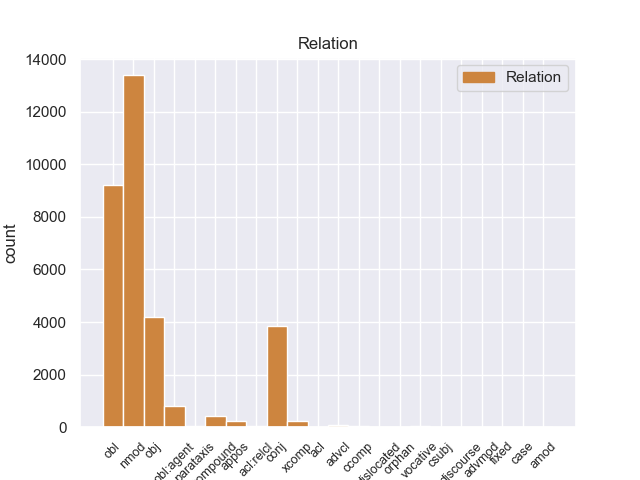
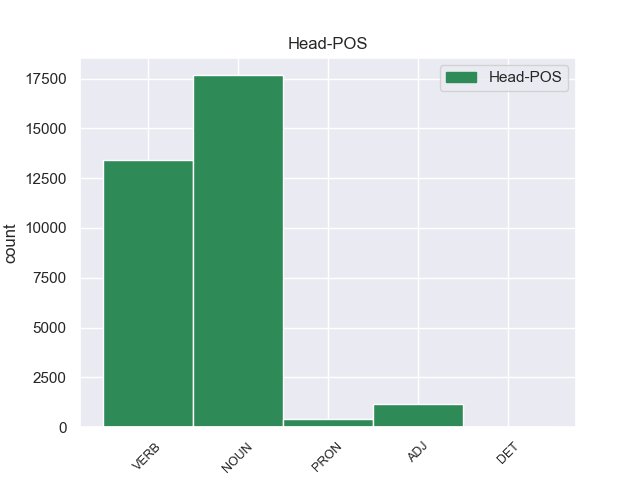
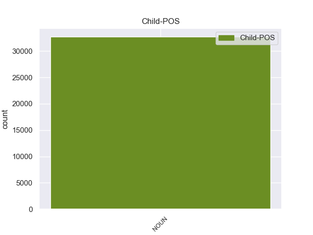

Distribution of features within this leaf



Agreement Rules sorted by frequency.
- When the dependent token is the nominal modifier(nmod) of the head token, and the dependent token is NOUN.
1 Gli _ _ _ _ 0 _ _ _
2 edifici _ _ _ _ 0 _ _ _
3 di _ _ _ _ 0 _ _ _
4 il _ _ _ _ 0 _ _ _
5 centro _ _ _ _ 0 _ _ _
6 storico _ _ _ _ 0 _ _ _
7 erano _ _ _ _ 0 _ _ _
8 costruiti _ _ _ _ 0 _ _ _
9 con _ _ _ _ 0 _ _ _
10 l’ _ _ _ _ 0 _ _ _
11 argilla argilla NOUN S Gender=Fem|Number=Sing 0 _ _ _
12 rossa _ _ _ _ 0 _ _ _
13 di _ _ _ _ 0 _ _ _
14 il _ _ _ _ 0 _ _ _
15 deserto deserto NOUN S Gender=Masc|Number=Sing 11 nmod 11:nmod:di SpaceAfter=No
16 , _ _ _ _ 0 _ _ _
17 un _ _ _ _ 0 _ _ _
18 materiale _ _ _ _ 0 _ _ _
19 molto _ _ _ _ 0 _ _ _
20 fragile _ _ _ _ 0 _ _ _
21 . _ _ _ _ 0 _ _ _
1 Il _ _ _ _ 0 _ _ _
2 25 _ _ _ _ 0 _ _ _
3 dicembre _ _ _ _ 0 _ _ _
4 2003 _ _ _ _ 0 _ _ _
5 , _ _ _ _ 0 _ _ _
6 in _ _ _ _ 0 _ _ _
7 il _ _ _ _ 0 _ _ _
8 sud sud NOUN S Gender=Masc|Number=Sing 14 obl 14:obl:in _
9 di _ _ _ _ 0 _ _ _
10 l’ _ _ _ _ 0 _ _ _
11 Iran _ _ _ _ 0 _ _ _
12 c’ _ _ _ _ 0 _ _ _
13 è _ _ _ _ 0 _ _ _
14 stato essere VERB V Gender=Masc|Number=Sing|Tense=Past|VerbForm=Part 0 _ _ _
15 un _ _ _ _ 0 _ _ _
16 terremoto _ _ _ _ 0 _ _ _
17 molto _ _ _ _ 0 _ _ _
18 grave _ _ _ _ 0 _ _ _
19 . _ _ _ _ 0 _ _ _
1 Quando _ _ _ _ 0 _ _ _
2 il _ _ _ _ 0 _ _ _
3 terremoto _ _ _ _ 0 _ _ _
4 è _ _ _ _ 0 _ _ _
5 forte _ _ _ _ 0 _ _ _
6 , _ _ _ _ 0 _ _ _
7 si _ _ _ _ 0 _ _ _
8 rovinano _ _ _ _ 0 _ _ _
9 o _ _ _ _ 0 _ _ _
10 crollano _ _ _ _ 0 _ _ _
11 anche _ _ _ _ 0 _ _ _
12 le _ _ _ _ 0 _ _ _
13 case casa NOUN S Gender=Fem|Number=Plur 0 _ _ _
14 e _ _ _ _ 0 _ _ _
15 i _ _ _ _ 0 _ _ _
16 palazzi palazzo NOUN S Gender=Masc|Number=Plur 13 conj 8:nsubj|10:nsubj|13:conj:e SpaceAfter=No
17 . _ _ _ _ 0 _ _ _
1 Infatti _ _ _ _ 0 _ _ _
2 alcuni _ _ _ _ 0 _ _ _
3 esperti _ _ _ _ 0 _ _ _
4 hanno _ _ _ _ 0 _ _ _
5 organizzato organizzare VERB V Gender=Masc|Number=Sing|Tense=Past|VerbForm=Part 0 _ _ _
6 un _ _ _ _ 0 _ _ _
7 servizio servizio NOUN S Gender=Masc|Number=Sing 5 obj 5:obj _
8 di _ _ _ _ 0 _ _ _
9 trasporto _ _ _ _ 0 _ _ _
10 pubblico _ _ _ _ 0 _ _ _
11 con _ _ _ _ 0 _ _ _
12 le _ _ _ _ 0 _ _ _
13 barche _ _ _ _ 0 _ _ _
14 . _ _ _ _ 0 _ _ _
1 Invece _ _ _ _ 0 _ _ _
2 Agassi _ _ _ _ 0 _ _ _
3 è _ _ _ _ 0 _ _ _
4 stato _ _ _ _ 0 _ _ _
5 eliminato eliminare VERB V Gender=Masc|Number=Sing|Tense=Past|VerbForm=Part 0 _ _ _
6 da _ _ _ _ 0 _ _ _
7 il _ _ _ _ 0 _ _ _
8 tennista tennista NOUN S Gender=Masc|Number=Sing 5 obl:agent 5:obl:agent:da _
9 spagnolo _ _ _ _ 0 _ _ _
10 David _ _ _ _ 0 _ _ _
11 Ferrer _ _ _ _ 0 _ _ _
12 . _ _ _ _ 0 _ _ _
1 I _ _ _ _ 0 _ _ _
2 ricercatori _ _ _ _ 0 _ _ _
3 di _ _ _ _ 0 _ _ _
4 il _ _ _ _ 0 _ _ _
5 Censis _ _ _ _ 0 _ _ _
6 , _ _ _ _ 0 _ _ _
7 Centro _ _ _ _ 0 _ _ _
8 Studi studio NOUN S Gender=Masc|Number=Plur 0 _ _ _
9 Investimenti investimento NOUN S Gender=Masc|Number=Plur 8 compound 8:compound _
10 Sociali _ _ _ _ 0 _ _ _
11 , _ _ _ _ 0 _ _ _
12 hanno _ _ _ _ 0 _ _ _
13 presentato _ _ _ _ 0 _ _ _
14 un _ _ _ _ 0 _ _ _
15 rapporto _ _ _ _ 0 _ _ _
16 su _ _ _ _ 0 _ _ _
17 le _ _ _ _ 0 _ _ _
18 condizioni _ _ _ _ 0 _ _ _
19 di _ _ _ _ 0 _ _ _
20 vita _ _ _ _ 0 _ _ _
21 di _ _ _ _ 0 _ _ _
22 la _ _ _ _ 0 _ _ _
23 popolazione _ _ _ _ 0 _ _ _
24 italiana _ _ _ _ 0 _ _ _
25 in _ _ _ _ 0 _ _ _
26 il _ _ _ _ 0 _ _ _
27 2003 _ _ _ _ 0 _ _ _
28 . _ _ _ _ 0 _ _ _
1 Gli _ _ _ _ 0 _ _ _
2 edifici _ _ _ _ 0 _ _ _
3 di _ _ _ _ 0 _ _ _
4 il _ _ _ _ 0 _ _ _
5 centro _ _ _ _ 0 _ _ _
6 storico _ _ _ _ 0 _ _ _
7 erano _ _ _ _ 0 _ _ _
8 costruiti _ _ _ _ 0 _ _ _
9 con _ _ _ _ 0 _ _ _
10 l’ _ _ _ _ 0 _ _ _
11 argilla argilla NOUN S Gender=Fem|Number=Sing 0 _ _ _
12 rossa _ _ _ _ 0 _ _ _
13 di _ _ _ _ 0 _ _ _
14 il _ _ _ _ 0 _ _ _
15 deserto _ _ _ _ 0 _ _ _
16 , _ _ _ _ 0 _ _ _
17 un _ _ _ _ 0 _ _ _
18 materiale materiale NOUN S Gender=Masc|Number=Sing 11 appos 11:appos _
19 molto _ _ _ _ 0 _ _ _
20 fragile _ _ _ _ 0 _ _ _
21 . _ _ _ _ 0 _ _ _
1 La _ _ _ _ 0 _ _ _
2 parola _ _ _ _ 0 _ _ _
3 presepe _ _ _ _ 0 _ _ _
4 o _ _ _ _ 0 _ _ _
5 presepio _ _ _ _ 0 _ _ _
6 significa significare VERB V Mood=Ind|Number=Sing|Person=3|Tense=Pres|VerbForm=Fin 0 _ _ _
7 “ _ _ _ _ 0 _ _ _
8 recinto recinto NOUN S Gender=Masc|Number=Sing 6 xcomp 6:xcomp _
9 chiuso _ _ _ _ 0 _ _ _
10 ” _ _ _ _ 0 _ _ _
11 , _ _ _ _ 0 _ _ _
12 cioè _ _ _ _ 0 _ _ _
13 mangiatoia _ _ _ _ 0 _ _ _
14 . _ _ _ _ 0 _ _ _
1 I _ _ _ _ 0 _ _ _
2 rappresentanti _ _ _ _ 0 _ _ _
3 di _ _ _ _ 0 _ _ _
4 la _ _ _ _ 0 _ _ _
5 maggioranza _ _ _ _ 0 _ _ _
6 hanno _ _ _ _ 0 _ _ _
7 eletto eleggere VERB V Gender=Masc|Number=Sing|Tense=Past|VerbForm=Part 0 _ _ _
8 Giorgio _ _ _ _ 0 _ _ _
9 Napolitano _ _ _ _ 0 _ _ _
10 Presidente _ _ _ _ 0 _ _ _
11 di _ _ _ _ 0 _ _ _
12 la _ _ _ _ 0 _ _ _
13 Repubblica _ _ _ _ 0 _ _ _
14 perché _ _ _ _ 0 _ _ _
15 è _ _ _ _ 0 _ _ _
16 un _ _ _ _ 0 _ _ _
17 uomo uomo NOUN S Gender=Masc|Number=Sing 7 advcl 7:advcl:perché _
18 ricco _ _ _ _ 0 _ _ _
19 di _ _ _ _ 0 _ _ _
20 esperienza _ _ _ _ 0 _ _ _
21 e _ _ _ _ 0 _ _ _
22 di _ _ _ _ 0 _ _ _
23 equilibrio _ _ _ _ 0 _ _ _
24 . _ _ _ _ 0 _ _ _
1 Signor signore NOUN S Gender=Masc|Number=Sing 13 vocative 13:vocative _
2 presidente _ _ _ _ 0 _ _ _
3 , _ _ _ _ 0 _ _ _
4 la _ _ _ _ 0 _ _ _
5 priorità _ _ _ _ 0 _ _ _
6 attribuita _ _ _ _ 0 _ _ _
7 a _ _ _ _ 0 _ _ _
8 i _ _ _ _ 0 _ _ _
9 criteri _ _ _ _ 0 _ _ _
10 finanziari _ _ _ _ 0 _ _ _
11 e _ _ _ _ 0 _ _ _
12 monetari _ _ _ _ 0 _ _ _
13 rafforza rafforzare VERB V Mood=Ind|Number=Sing|Person=3|Tense=Pres|VerbForm=Fin 0 _ _ _
14 il _ _ _ _ 0 _ _ _
15 dilagare _ _ _ _ 0 _ _ _
16 di _ _ _ _ 0 _ _ _
17 le _ _ _ _ 0 _ _ _
18 ineguaglianze _ _ _ _ 0 _ _ _
19 di _ _ _ _ 0 _ _ _
20 ogni _ _ _ _ 0 _ _ _
21 genere _ _ _ _ 0 _ _ _
22 . _ _ _ _ 0 _ _ _
1 Il _ _ _ _ 0 _ _ _
2 titolo _ _ _ _ 0 _ _ _
3 di _ _ _ _ 0 _ _ _
4 la _ _ _ _ 0 _ _ _
5 canzone _ _ _ _ 0 _ _ _
6 che _ _ _ _ 0 _ _ _
7 Luciano _ _ _ _ 0 _ _ _
8 Ligabue _ _ _ _ 0 _ _ _
9 ha _ _ _ _ 0 _ _ _
10 composto _ _ _ _ 0 _ _ _
11 per _ _ _ _ 0 _ _ _
12 il _ _ _ _ 0 _ _ _
13 film _ _ _ _ 0 _ _ _
14 Da _ _ _ _ 0 _ _ _
15 zero _ _ _ _ 0 _ _ _
16 a _ _ _ _ 0 _ _ _
17 dieci _ _ _ _ 0 _ _ _
18 è essere VERB V Mood=Ind|Number=Sing|Person=3|Tense=Pres|VerbForm=Fin 0 _ _ _
19 : _ _ _ _ 0 _ _ _
20 Questa _ _ _ _ 0 _ _ _
21 è _ _ _ _ 0 _ _ _
22 la _ _ _ _ 0 _ _ _
23 mia _ _ _ _ 0 _ _ _
24 vita vita NOUN S Gender=Fem|Number=Sing 18 ccomp 18:ccomp SpaceAfter=No
25 . _ _ _ _ 0 _ _ _
1 Il _ _ _ _ 0 _ _ _
2 centro _ _ _ _ 0 _ _ _
3 storico _ _ _ _ 0 _ _ _
4 era _ _ _ _ 0 _ _ _
5 la _ _ _ _ 0 _ _ _
6 parte parte NOUN S Gender=Fem|Number=Sing 0 _ _ _
7 più _ _ _ _ 0 _ _ _
8 antica _ _ _ _ 0 _ _ _
9 di _ _ _ _ 0 _ _ _
10 Bam _ _ _ _ 0 _ _ _
11 che _ _ _ _ 0 _ _ _
12 era _ _ _ _ 0 _ _ _
13 patrimonio patrimonio NOUN S Gender=Masc|Number=Sing 6 acl:relcl 6:acl:relcl _
14 artistico _ _ _ _ 0 _ _ _
15 di _ _ _ _ 0 _ _ _
16 tutta _ _ _ _ 0 _ _ _
17 l’ _ _ _ _ 0 _ _ _
18 umanità _ _ _ _ 0 _ _ _
19 . _ _ _ _ 0 _ _ _
1 Ha _ _ _ _ 0 _ _ _
2 scritto _ _ _ _ 0 _ _ _
3 molti _ _ _ _ 0 _ _ _
4 libri libro NOUN S Gender=Masc|Number=Plur 0 _ _ _
5 per _ _ _ _ 0 _ _ _
6 ragazzi _ _ _ _ 0 _ _ _
7 : _ _ _ _ 0 _ _ _
8 i _ _ _ _ 0 _ _ _
9 Racconti Racconti NOUN S Gender=Masc|Number=Plur 4 parataxis 4:parataxis _
10 di _ _ _ _ 0 _ _ _
11 le _ _ _ _ 0 _ _ _
12 fate _ _ _ _ 0 _ _ _
13 di _ _ _ _ 0 _ _ _
14 il _ _ _ _ 0 _ _ _
15 1875 _ _ _ _ 0 _ _ _
16 , _ _ _ _ 0 _ _ _
17 Il _ _ _ _ 0 _ _ _
18 viaggio _ _ _ _ 0 _ _ _
19 per _ _ _ _ 0 _ _ _
20 l' _ _ _ _ 0 _ _ _
21 Italia _ _ _ _ 0 _ _ _
22 di _ _ _ _ 0 _ _ _
23 Giannettino _ _ _ _ 0 _ _ _
24 di _ _ _ _ 0 _ _ _
25 il _ _ _ _ 0 _ _ _
26 1876 _ _ _ _ 0 _ _ _
27 e _ _ _ _ 0 _ _ _
28 Minuzzolo _ _ _ _ 0 _ _ _
29 di _ _ _ _ 0 _ _ _
30 il _ _ _ _ 0 _ _ _
31 1878 _ _ _ _ 0 _ _ _
32 . _ _ _ _ 0 _ _ _
1 Alcuni _ _ _ _ 0 _ _ _
2 inquinanti inquinante NOUN S Gender=Masc|Number=Plur 5 dislocated 5:dislocated _
3 li _ _ _ _ 0 _ _ _
4 abbiamo _ _ _ _ 0 _ _ _
5 creati creare VERB V Gender=Masc|Number=Plur|Tense=Past|VerbForm=Part 0 _ _ _
6 noi _ _ _ _ 0 _ _ _
7 , _ _ _ _ 0 _ _ _
8 molecole _ _ _ _ 0 _ _ _
9 come _ _ _ _ 0 _ _ _
10 i _ _ _ _ 0 _ _ _
11 PCB _ _ _ _ 0 _ _ _
12 , _ _ _ _ 0 _ _ _
13 che _ _ _ _ 0 _ _ _
14 il _ _ _ _ 0 _ _ _
15 nostro _ _ _ _ 0 _ _ _
16 organismo _ _ _ _ 0 _ _ _
17 non _ _ _ _ 0 _ _ _
18 riesce _ _ _ _ 0 _ _ _
19 a _ _ _ _ 0 _ _ _
20 scindere _ _ _ _ 0 _ _ _
21 , _ _ _ _ 0 _ _ _
22 e _ _ _ _ 0 _ _ _
23 che _ _ _ _ 0 _ _ _
24 finiscono _ _ _ _ 0 _ _ _
25 a _ _ _ _ 0 _ _ _
26 la _ _ _ _ 0 _ _ _
27 base _ _ _ _ 0 _ _ _
28 di _ _ _ _ 0 _ _ _
29 quella _ _ _ _ 0 _ _ _
30 piramide _ _ _ _ 0 _ _ _
31 , _ _ _ _ 0 _ _ _
32 e _ _ _ _ 0 _ _ _
33 risalgono _ _ _ _ 0 _ _ _
34 , _ _ _ _ 0 _ _ _
35 e _ _ _ _ 0 _ _ _
36 in _ _ _ _ 0 _ _ _
37 quel _ _ _ _ 0 _ _ _
38 modo _ _ _ _ 0 _ _ _
39 vengono _ _ _ _ 0 _ _ _
40 passati _ _ _ _ 0 _ _ _
41 verso _ _ _ _ 0 _ _ _
42 l' _ _ _ _ 0 _ _ _
43 alto _ _ _ _ 0 _ _ _
44 , _ _ _ _ 0 _ _ _
45 a _ _ _ _ 0 _ _ _
46 i _ _ _ _ 0 _ _ _
47 predatori _ _ _ _ 0 _ _ _
48 fino _ _ _ _ 0 _ _ _
49 a _ _ _ _ 0 _ _ _
50 i _ _ _ _ 0 _ _ _
51 predatori _ _ _ _ 0 _ _ _
52 in _ _ _ _ 0 _ _ _
53 cima _ _ _ _ 0 _ _ _
54 a _ _ _ _ 0 _ _ _
55 la _ _ _ _ 0 _ _ _
56 piramide _ _ _ _ 0 _ _ _
57 . _ _ _ _ 0 _ _ _
1 Ringrazio _ _ _ _ 0 _ _ _
2 innanzi _ _ _ _ 0 _ _ _
3 tutto _ _ _ _ 0 _ _ _
4 il _ _ _ _ 0 _ _ _
5 relatore _ _ _ _ 0 _ _ _
6 per _ _ _ _ 0 _ _ _
7 il _ _ _ _ 0 _ _ _
8 suo _ _ _ _ 0 _ _ _
9 lavoro _ _ _ _ 0 _ _ _
10 estremamente _ _ _ _ 0 _ _ _
11 preciso _ _ _ _ 0 _ _ _
12 e _ _ _ _ 0 _ _ _
13 tecnico _ _ _ _ 0 _ _ _
14 su _ _ _ _ 0 _ _ _
15 il _ _ _ _ 0 _ _ _
16 fascicolo _ _ _ _ 0 _ _ _
17 in _ _ _ _ 0 _ _ _
18 parola _ _ _ _ 0 _ _ _
19 , _ _ _ _ 0 _ _ _
20 e _ _ _ _ 0 _ _ _
21 in _ _ _ _ 0 _ _ _
22 secondo _ _ _ _ 0 _ _ _
23 luogo _ _ _ _ 0 _ _ _
24 la _ _ _ _ 0 _ _ _
25 commissione commissione NOUN S Gender=Fem|Number=Sing 0 _ _ _
26 per _ _ _ _ 0 _ _ _
27 la _ _ _ _ 0 _ _ _
28 proposta proposta NOUN S Gender=Fem|Number=Sing 25 orphan 25:orphan _
29 presentata _ _ _ _ 0 _ _ _
30 . _ _ _ _ 0 _ _ _
1 I _ _ _ _ 0 _ _ _
2 suoi _ _ _ _ 0 _ _ _
3 personaggi _ _ _ _ 0 _ _ _
4 diventano _ _ _ _ 0 _ _ _
5 più _ _ _ _ 0 _ _ _
6 complessi _ _ _ _ 0 _ _ _
7 e _ _ _ _ 0 _ _ _
8 teneri _ _ _ _ 0 _ _ _
9 man mano NOUN S Gender=Fem|Number=Sing 0 _ _ _
10 mano mano NOUN S Gender=Fem|Number=Sing 9 fixed 9:fixed _
11 che _ _ _ _ 0 _ _ _
12 passa _ _ _ _ 0 _ _ _
13 abilmente _ _ _ _ 0 _ _ _
14 da _ _ _ _ 0 _ _ _
15 le _ _ _ _ 0 _ _ _
16 scene _ _ _ _ 0 _ _ _
17 comiche _ _ _ _ 0 _ _ _
18 a _ _ _ _ 0 _ _ _
19 quelle _ _ _ _ 0 _ _ _
20 serie _ _ _ _ 0 _ _ _
21 , _ _ _ _ 0 _ _ _
22 da _ _ _ _ 0 _ _ _
23 la _ _ _ _ 0 _ _ _
24 prosa _ _ _ _ 0 _ _ _
25 a _ _ _ _ 0 _ _ _
26 la _ _ _ _ 0 _ _ _
27 poesia _ _ _ _ 0 _ _ _
28 , _ _ _ _ 0 _ _ _
29 e _ _ _ _ 0 _ _ _
30 raggiunge _ _ _ _ 0 _ _ _
31 la _ _ _ _ 0 _ _ _
32 varietà _ _ _ _ 0 _ _ _
33 narrativa _ _ _ _ 0 _ _ _
34 di _ _ _ _ 0 _ _ _
35 il _ _ _ _ 0 _ _ _
36 suo _ _ _ _ 0 _ _ _
37 più _ _ _ _ 0 _ _ _
38 maturo _ _ _ _ 0 _ _ _
39 lavoro _ _ _ _ 0 _ _ _
40 . _ _ _ _ 0 _ _ _
1 Ma _ _ _ _ 0 _ _ _
2 quanto _ _ _ _ 0 _ _ _
3 ci _ _ _ _ 0 _ _ _
4 metteranno _ _ _ _ 0 _ _ _
5 i _ _ _ _ 0 _ _ _
6 governi _ _ _ _ 0 _ _ _
7 ad _ _ _ _ 0 _ _ _
8 agire _ _ _ _ 0 _ _ _
9 resta resta NOUN S Gender=Fem|Number=Sing 0 _ _ _
10 una _ _ _ _ 0 _ _ _
11 questione questione NOUN S Gender=Fem|Number=Sing 9 acl 9:acl _
12 di _ _ _ _ 0 _ _ _
13 il _ _ _ _ 0 _ _ _
14 tutto _ _ _ _ 0 _ _ _
15 aperta _ _ _ _ 0 _ _ _
16 . _ _ _ _ 0 _ _ _
1 In _ _ _ _ 0 _ _ _
2 la _ _ _ _ 0 _ _ _
3 serata _ _ _ _ 0 _ _ _
4 di _ _ _ _ 0 _ _ _
5 martedì _ _ _ _ 0 _ _ _
6 erano _ _ _ _ 0 _ _ _
7 giunti _ _ _ _ 0 _ _ _
8 a _ _ _ _ 0 _ _ _
9 Tirana _ _ _ _ 0 _ _ _
10 i _ _ _ _ 0 _ _ _
11 legali _ _ _ _ 0 _ _ _
12 italiani _ _ _ _ 0 _ _ _
13 che _ _ _ _ 0 _ _ _
14 hanno _ _ _ _ 0 _ _ _
15 avuto _ _ _ _ 0 _ _ _
16 l' _ _ _ _ 0 _ _ _
17 incarico _ _ _ _ 0 _ _ _
18 di _ _ _ _ 0 _ _ _
19 assistere _ _ _ _ 0 _ _ _
20 Vefa _ _ _ _ 0 _ _ _
21 in _ _ _ _ 0 _ _ _
22 il _ _ _ _ 0 _ _ _
23 risanamento _ _ _ _ 0 _ _ _
24 di _ _ _ _ 0 _ _ _
25 il _ _ _ _ 0 _ _ _
26 gruppo _ _ _ _ 0 _ _ _
27 , _ _ _ _ 0 _ _ _
28 ma _ _ _ _ 0 _ _ _
29 non _ _ _ _ 0 _ _ _
30 è _ _ _ _ 0 _ _ _
31 chiaro chiaro ADJ A Gender=Masc|Number=Sing 0 _ _ _
32 se _ _ _ _ 0 _ _ _
33 la _ _ _ _ 0 _ _ _
34 decisione _ _ _ _ 0 _ _ _
35 adottata _ _ _ _ 0 _ _ _
36 ieri _ _ _ _ 0 _ _ _
37 da _ _ _ _ 0 _ _ _
38 il _ _ _ _ 0 _ _ _
39 presidente _ _ _ _ 0 _ _ _
40 Alimucay _ _ _ _ 0 _ _ _
41 sia _ _ _ _ 0 _ _ _
42 stato _ _ _ _ 0 _ _ _
43 il _ _ _ _ 0 _ _ _
44 primo _ _ _ _ 0 _ _ _
45 risultato risultato NOUN S Gender=Masc|Number=Sing 31 csubj 31:csubj _
46 di _ _ _ _ 0 _ _ _
47 questa _ _ _ _ 0 _ _ _
48 consulenza _ _ _ _ 0 _ _ _
49 . _ _ _ _ 0 _ _ _
1 Pazienza pazienza NOUN S Gender=Fem|Number=Sing 7 discourse 7:discourse SpaceAfter=No
2 , _ _ _ _ 0 _ _ _
3 lo _ _ _ _ 0 _ _ _
4 stadio _ _ _ _ 0 _ _ _
5 di _ _ _ _ 0 _ _ _
6 Marassi _ _ _ _ 0 _ _ _
7 offre offrire VERB V Mood=Ind|Number=Sing|Person=3|Tense=Pres|VerbForm=Fin 0 _ _ _
8 tanti _ _ _ _ 0 _ _ _
9 angoli _ _ _ _ 0 _ _ _
10 ospitali _ _ _ _ 0 _ _ _
11 , _ _ _ _ 0 _ _ _
12 vedrò _ _ _ _ 0 _ _ _
13 comunque _ _ _ _ 0 _ _ _
14 di _ _ _ _ 0 _ _ _
15 attivare _ _ _ _ 0 _ _ _
16 un _ _ _ _ 0 _ _ _
17 collegamento _ _ _ _ 0 _ _ _
18 con _ _ _ _ 0 _ _ _
19 la _ _ _ _ 0 _ _ _
20 panchina _ _ _ _ 0 _ _ _
21 . _ _ _ _ 0 _ _ _
1 Mano mano NOUN S Gender=Fem|Number=Sing 9 advmod 9:advmod _
2 a _ _ _ _ 0 _ _ _
3 mano _ _ _ _ 0 _ _ _
4 che _ _ _ _ 0 _ _ _
5 si _ _ _ _ 0 _ _ _
6 va _ _ _ _ 0 _ _ _
7 avanti _ _ _ _ 0 _ _ _
8 si _ _ _ _ 0 _ _ _
9 incontra incontrare VERB V Mood=Ind|Number=Sing|Person=3|Tense=Pres|VerbForm=Fin 0 _ _ _
10 una _ _ _ _ 0 _ _ _
11 folla _ _ _ _ 0 _ _ _
12 sempre _ _ _ _ 0 _ _ _
13 più _ _ _ _ 0 _ _ _
14 folta _ _ _ _ 0 _ _ _
15 . _ _ _ _ 0 _ _ _
1 Chi _ _ _ _ 0 _ _ _
2 era _ _ _ _ 0 _ _ _
3 uno _ _ _ _ 0 _ _ _
4 di _ _ _ _ 0 _ _ _
5 gli _ _ _ _ 0 _ _ _
6 dei di NOUN S Gender=Masc|Number=Plur 7 case 7:case _
7 egizi egizio ADJ A Gender=Masc|Number=Plur 0 _ _ _
8 ? _ _ _ _ 0 _ _ _
1 Bula _ _ _ _ 0 _ _ _
2 Bula _ _ _ _ 0 _ _ _
3 è _ _ _ _ 0 _ _ _
4 il _ _ _ _ 0 _ _ _
5 nome _ _ _ _ 0 _ _ _
6 di _ _ _ _ 0 _ _ _
7 un _ _ _ _ 0 _ _ _
8 posto posto NOUN S Gender=Masc|Number=Sing 0 _ _ _
9 immaginario immaginario NOUN S Gender=Masc|Number=Sing 8 amod 8:amod _
10 dove _ _ _ _ 0 _ _ _
11 le _ _ _ _ 0 _ _ _
12 persone _ _ _ _ 0 _ _ _
13 possono _ _ _ _ 0 _ _ _
14 dimenticare _ _ _ _ 0 _ _ _
15 le _ _ _ _ 0 _ _ _
16 cose _ _ _ _ 0 _ _ _
17 spiacevoli _ _ _ _ 0 _ _ _
18 di _ _ _ _ 0 _ _ _
19 la _ _ _ _ 0 _ _ _
20 vita _ _ _ _ 0 _ _ _
21 . _ _ _ _ 0 _ _ _
Disagree Examples:
1 una _ _ _ _ 0 _ _ _
2 sala _ _ _ _ 0 _ _ _
3 ha _ _ _ _ 0 _ _ _
4 dovuto _ _ _ _ 0 _ _ _
5 essere _ _ _ _ 0 _ _ _
6 sgomberata _ _ _ _ 0 _ _ _
7 per _ _ _ _ 0 _ _ _
8 una _ _ _ _ 0 _ _ _
9 fuga _ _ _ _ 0 _ _ _
10 di _ _ _ _ 0 _ _ _
11 gas _ _ _ _ 0 _ _ _
12 tossico _ _ _ _ 0 _ _ _
13 da _ _ _ _ 0 _ _ _
14 una _ _ _ _ 0 _ _ _
15 scultura _ _ _ _ 0 _ _ _
16 moderna _ _ _ _ 0 _ _ _
17 in _ _ _ _ 0 _ _ _
18 vetro _ _ _ _ 0 _ _ _
19 che _ _ _ _ 0 _ _ _
20 simboleggia simboleggiare VERB V Mood=Ind|Number=Sing|Person=3|Tense=Pres|VerbForm=Fin 0 _ _ _
21 " _ _ _ _ 0 _ _ _
22 i _ _ _ _ 0 _ _ _
23 pericoli pericolo NOUN S Gender=Masc|Number=Plur 20 obj 20:obj _
24 di _ _ _ _ 0 _ _ _
25 la _ _ _ _ 0 _ _ _
26 vita _ _ _ _ 0 _ _ _
27 " _ _ _ _ 0 _ _ _
28 . _ _ _ _ 0 _ _ _
1 una _ _ _ _ 0 _ _ _
2 sala _ _ _ _ 0 _ _ _
3 ha _ _ _ _ 0 _ _ _
4 dovuto _ _ _ _ 0 _ _ _
5 essere _ _ _ _ 0 _ _ _
6 sgomberata _ _ _ _ 0 _ _ _
7 per _ _ _ _ 0 _ _ _
8 una _ _ _ _ 0 _ _ _
9 fuga _ _ _ _ 0 _ _ _
10 di _ _ _ _ 0 _ _ _
11 gas _ _ _ _ 0 _ _ _
12 tossico _ _ _ _ 0 _ _ _
13 da _ _ _ _ 0 _ _ _
14 una _ _ _ _ 0 _ _ _
15 scultura _ _ _ _ 0 _ _ _
16 moderna _ _ _ _ 0 _ _ _
17 in _ _ _ _ 0 _ _ _
18 vetro _ _ _ _ 0 _ _ _
19 che _ _ _ _ 0 _ _ _
20 simboleggia _ _ _ _ 0 _ _ _
21 " _ _ _ _ 0 _ _ _
22 i _ _ _ _ 0 _ _ _
23 pericoli pericolo NOUN S Gender=Masc|Number=Plur 0 _ _ _
24 di _ _ _ _ 0 _ _ _
25 la _ _ _ _ 0 _ _ _
26 vita vita NOUN S Gender=Fem|Number=Sing 23 nmod 23:nmod:di SpaceAfter=No
27 " _ _ _ _ 0 _ _ _
28 . _ _ _ _ 0 _ _ _
1 Rilevata _ _ _ _ 0 _ _ _
2 la _ _ _ _ 0 _ _ _
3 presenza _ _ _ _ 0 _ _ _
4 di _ _ _ _ 0 _ _ _
5 gas _ _ _ _ 0 _ _ _
6 in _ _ _ _ 0 _ _ _
7 uno uno PRON PI Gender=Masc|Number=Sing|PronType=Ind 0 _ _ _
8 di _ _ _ _ 0 _ _ _
9 i _ _ _ _ 0 _ _ _
10 tubi tubo NOUN S Gender=Masc|Number=Plur 7 nmod 7:nmod:di|13:nsubj _
11 trasparenti _ _ _ _ 0 _ _ _
12 che _ _ _ _ 0 _ _ _
13 compongono _ _ _ _ 0 _ _ _
14 l' _ _ _ _ 0 _ _ _
15 opera _ _ _ _ 0 _ _ _
16 , _ _ _ _ 0 _ _ _
17 i _ _ _ _ 0 _ _ _
18 guardiani _ _ _ _ 0 _ _ _
19 hanno _ _ _ _ 0 _ _ _
20 fatto _ _ _ _ 0 _ _ _
21 scattare _ _ _ _ 0 _ _ _
22 uno _ _ _ _ 0 _ _ _
23 speciale _ _ _ _ 0 _ _ _
24 piano _ _ _ _ 0 _ _ _
25 d' _ _ _ _ 0 _ _ _
26 emergenza _ _ _ _ 0 _ _ _
27 e _ _ _ _ 0 _ _ _
28 per _ _ _ _ 0 _ _ _
29 45 _ _ _ _ 0 _ _ _
30 minuti _ _ _ _ 0 _ _ _
31 i _ _ _ _ 0 _ _ _
32 pompieri _ _ _ _ 0 _ _ _
33 hanno _ _ _ _ 0 _ _ _
34 isolato _ _ _ _ 0 _ _ _
35 la _ _ _ _ 0 _ _ _
36 sala _ _ _ _ 0 _ _ _
37 . _ _ _ _ 0 _ _ _
1 Rilevata _ _ _ _ 0 _ _ _
2 la _ _ _ _ 0 _ _ _
3 presenza _ _ _ _ 0 _ _ _
4 di _ _ _ _ 0 _ _ _
5 gas _ _ _ _ 0 _ _ _
6 in _ _ _ _ 0 _ _ _
7 uno _ _ _ _ 0 _ _ _
8 di _ _ _ _ 0 _ _ _
9 i _ _ _ _ 0 _ _ _
10 tubi _ _ _ _ 0 _ _ _
11 trasparenti _ _ _ _ 0 _ _ _
12 che _ _ _ _ 0 _ _ _
13 compongono comporre VERB V Mood=Ind|Number=Plur|Person=3|Tense=Pres|VerbForm=Fin 0 _ _ _
14 l' _ _ _ _ 0 _ _ _
15 opera opera NOUN S Gender=Fem|Number=Sing 13 obj 13:obj SpaceAfter=No
16 , _ _ _ _ 0 _ _ _
17 i _ _ _ _ 0 _ _ _
18 guardiani _ _ _ _ 0 _ _ _
19 hanno _ _ _ _ 0 _ _ _
20 fatto _ _ _ _ 0 _ _ _
21 scattare _ _ _ _ 0 _ _ _
22 uno _ _ _ _ 0 _ _ _
23 speciale _ _ _ _ 0 _ _ _
24 piano _ _ _ _ 0 _ _ _
25 d' _ _ _ _ 0 _ _ _
26 emergenza _ _ _ _ 0 _ _ _
27 e _ _ _ _ 0 _ _ _
28 per _ _ _ _ 0 _ _ _
29 45 _ _ _ _ 0 _ _ _
30 minuti _ _ _ _ 0 _ _ _
31 i _ _ _ _ 0 _ _ _
32 pompieri _ _ _ _ 0 _ _ _
33 hanno _ _ _ _ 0 _ _ _
34 isolato _ _ _ _ 0 _ _ _
35 la _ _ _ _ 0 _ _ _
36 sala _ _ _ _ 0 _ _ _
37 . _ _ _ _ 0 _ _ _
1 Rilevata _ _ _ _ 0 _ _ _
2 la _ _ _ _ 0 _ _ _
3 presenza _ _ _ _ 0 _ _ _
4 di _ _ _ _ 0 _ _ _
5 gas _ _ _ _ 0 _ _ _
6 in _ _ _ _ 0 _ _ _
7 uno _ _ _ _ 0 _ _ _
8 di _ _ _ _ 0 _ _ _
9 i _ _ _ _ 0 _ _ _
10 tubi _ _ _ _ 0 _ _ _
11 trasparenti _ _ _ _ 0 _ _ _
12 che _ _ _ _ 0 _ _ _
13 compongono _ _ _ _ 0 _ _ _
14 l' _ _ _ _ 0 _ _ _
15 opera _ _ _ _ 0 _ _ _
16 , _ _ _ _ 0 _ _ _
17 i _ _ _ _ 0 _ _ _
18 guardiani _ _ _ _ 0 _ _ _
19 hanno _ _ _ _ 0 _ _ _
20 fatto _ _ _ _ 0 _ _ _
21 scattare _ _ _ _ 0 _ _ _
22 uno _ _ _ _ 0 _ _ _
23 speciale _ _ _ _ 0 _ _ _
24 piano _ _ _ _ 0 _ _ _
25 d' _ _ _ _ 0 _ _ _
26 emergenza _ _ _ _ 0 _ _ _
27 e _ _ _ _ 0 _ _ _
28 per _ _ _ _ 0 _ _ _
29 45 _ _ _ _ 0 _ _ _
30 minuti minuto NOUN S Gender=Masc|Number=Plur 34 obl 34:obl:per _
31 i _ _ _ _ 0 _ _ _
32 pompieri _ _ _ _ 0 _ _ _
33 hanno _ _ _ _ 0 _ _ _
34 isolato isolare VERB V Gender=Masc|Number=Sing|Tense=Past|VerbForm=Part 0 _ _ _
35 la _ _ _ _ 0 _ _ _
36 sala _ _ _ _ 0 _ _ _
37 . _ _ _ _ 0 _ _ _